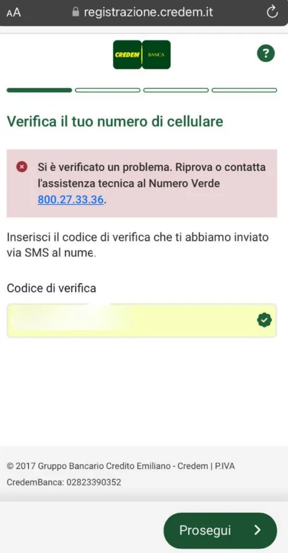
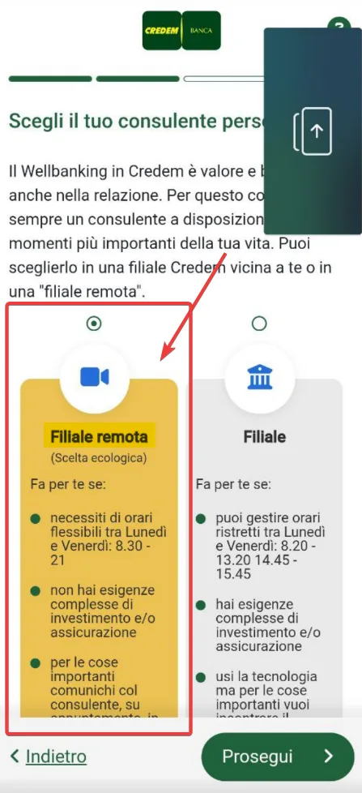
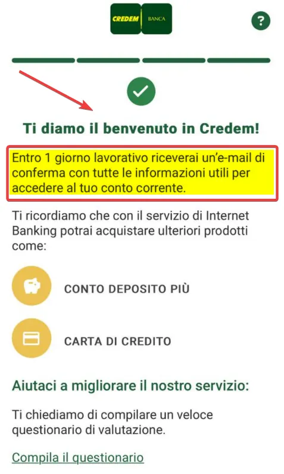

Credem Link
Buono Amazon da 25€, 50€ se hai meno di 30 anni, se apri Credem Link con il codice invito entro il 30 novembre 2026 e attivi un servizio in più oltre a Internet Banking e carta, per esempio la domiciliazione di una bolletta.
Passaggi
- 1
Controlla di poter partecipare
Il premio è per chi vive in Italia, ha 18 anni e non è cliente Credem: Credem Link è per chi non ha rapporti con Credem da almeno 10 anni ed è intestato solo a te.
- 2
Apri Credem Link entro il 30 novembre
Dalla pagina del conto online tocca «Apri il conto» e inserisci email, cellulare con il codice SMS, cittadinanza e residenza. Il conto deve risultare attivo entro il 30 novembre 2026: non aspettare l'ultimo giorno. Dal computer, per esempio con Microsoft Edge, la procedura dà meno errori.

- 3
Inserisci il codice invito
Scrivilo nel campo del codice promozionale durante l'apertura: è il codice del riquadro giallo di questa pagina. Senza codice il premio non vale.

- 4
Scegli la Filiale Remota
Quando la procedura ti chiede il consulente, scegli la Filiale Remota se non hai una filiale Credem vicina.

- 5
Fatti riconoscere
Usa lo SPID oppure il documento d'identità con il videoselfie: serve una stanza illuminata e la videocamera del telefono o del computer. Tieni pronta anche la tessera sanitaria.
- 6
Scegli la carta
La Credemcard Bancomat è gratuita ma funziona solo in Italia. La Credemcard Mastercard internazionale è gratis il primo anno, poi costa 1,50€ al mese. Tutte e due contano come uno dei servizi del premio.
- 7
Firma i contratti
Rispondi alle domande su lavoro e reddito, poi firma con il codice OTP che ti arriva per SMS.

- 8
Attiva conto e carta nell'app
In circa 24 ore ricevi un'email con IBAN e codice utente e un SMS con la password provvisoria. Scarica l'app Credem, accedi e salva PIN e password. Poi apri «Le mie carte», scorri la carta verso destra e attivala con il PIN scelto in apertura. Se non la attivi entro un mese, la carta si disattiva.
- 9
Aggiungi un servizio entro 90 giorni
Oltre a Internet Banking e carta ne serve un altro, entro 90 giorni dall'attivazione del conto. Il più semplice è domiciliare sul conto Credem una bolletta di luce, gas, acqua o telefono. Valgono anche l'accredito dello stipendio o della pensione e la carta di credito Ego Classic.
Per spendere poco
- Domicilia una bolletta che paghi già: nell'area clienti del fornitore scegli l'addebito su conto e scrivi l'IBAN Credem. Non spendi niente in più.
- 10
Ricevi il buono
Credem manda il buono Amazon all'email dell'Internet Banking entro 150 giorni dalla fine dell'iniziativa. Controlla anche lo spam e tieni conto e servizi attivi finché non arriva.
Per spendere poco
- Dopo il premio puoi chiudere il conto senza PEC né raccomandata con il trasferimento conto di un'altra banca: per esempio BBVA › menu › Servizi speciali › Cambio Facile, oppure buddy › Prodotti › Trasferisci.
Bonus in più
- Cashback del 4% sugli acquisti con la carta dal 1 dicembre 2026 al 30 aprile 2027, per chi si registra entro il 18 dicembre: con 500€ di spesa al mese ricevi 20€, e oltre i 500€ il rimborso resta 20€.
Dove si sbaglia
- Se usi lo SPID, controlla che i dati anagrafici e la residenza siano giusti, o la verifica non va a buon fine.
- Se la registrazione si blocca, apri dal computer l'email «Riprendi da qui la tua richiesta di Conto Credem Link» e tocca «Riprendi richiesta».
- Credem Link è intestato a una sola persona: niente conti cointestati.
- Ogni codice invito vale per 10 amici al massimo.
Controllato il 23 nov 2026 sul sito ufficiale.